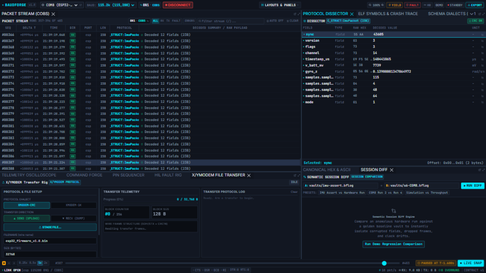
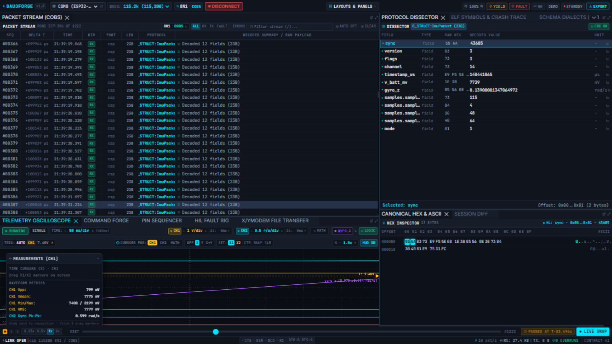

Protocol Dissector
The Protocol Dissector turns the selected frame's raw bytes into named fields with types, offsets, raw hex and decoded values. It is the panel that answers "what does byte 10 actually mean?".

How decoding works
The engine decodes every incoming frame with the dissector configured on that port in the workspace file:
dissector = { type = "c_header", file = "imu_packet.h", root_struct = "ImuPacket" }
Supported dissector types:
| Type | Source | Notes |
|---|---|---|
c_header |
A C header file | struct __attribute__((packed)); bitfields, nested arrays, enums. Root struct names the entry type. |
native |
Built-in pack | ccsds_tm, ccsds_tc, csp, modbus_rtu, protobuf |
protobuf |
.proto text |
compiled live by the engine |
mavlink |
MAVLink XML | dialect definition |
Frames whose checksum fails, or whose length does not match the schema, appear with an honest ERR: … summary — the dissector never invents values for bytes it cannot decode.
Using the panel
- Select a frame in the Packet Stream. The field table fills: name, type, raw hex slice, decoded value, unit.
- Hover a field — the Hex Inspector highlights exactly those bytes in the frame.
- Click a field — it becomes the active selection (the
Selected: name · Offset: 0x0A..0x0Dbanner pins it). - 📈 (Plot) — numeric fields show a plot button; clicking it binds the field to a live trace lane on the Telemetry Oscilloscope. A toast confirms the binding; the lane appears immediately and updates with every frame.

Header decode rules (C structs)
- Structs must be declared
packed—struct __attribute__((packed)) ImuPacket { … }— so offsets match the wire. - Bitfields (
uint8_t flags : 3; uint8_t channel : 5;) decode into separate rows sharing one byte. - Nested arrays expand as
samples.samples[0..n]rows. __le16/__le32/__be16/__be32fix endianness per field; plainuint16_tfollows host order — prefer the explicit types on wire formats.- A trailing CRC field is checked when the port's framing checksum matches (
crc = "crc32c"in framing).
Changing the decoder live
You do not need to restart to change how frames decode — upload a new schema in Schema Dialects and APPLY TO WORKSPACE swaps the port's dissector mid-session. The stream re-dissects from that instant on; the vault still holds the raw bytes.